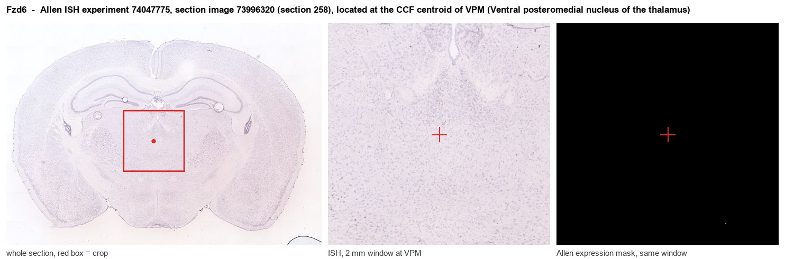

Fzd6
Frizzled-6 (Fz-6) (mFz6)
Spatial tier: REGION_BIASED · Class: GPCR · Top region: VPM (Ventral posteromedial nucleus of the thalamus) · Positive regions: 37/554
44.5Discovery Score
40.4Targetability Score
CEvidence grade C
What this means: Fzd6: fine CCF profile is region-biased toward VPM (top regions: VPM, LGd-ip, LGd-co, VPL, PO); this is a discovery lead, not direct proof.
Function in VPM: evidence, prediction, innovation
- Gene function
- FZD6 is a Frizzled-family seven-transmembrane Wnt receptor that signals predominantly through the non-canonical planar cell polarity branch rather than beta-catenin, acting with Dishevelled, Vangl2 and Celsr to polarise cells and orient structures such as hair follicles; its membrane localisation requires Dishevelled-enabled casein kinase 1 phosphorylation. Loss-of-function mutations cause human nail dysplasia.
- Region function
- The ventral posteromedial nucleus is the thalamic relay for the whisker/face somatosensory pathway: its barreloids receive lemniscal trigeminal input and project topographically to layer 4 barrels of primary somatosensory cortex.
- Published in this region
- inferred No region-specific literature found. The closest relevant biology is that Wnt/PCP components organise axon guidance and topographic map formation generally (Dong 2018; Strakova 2018), and that the ventrobasal thalamus uses transient molecular cues to build the whisker map, as shown for galanin by Hevesi 2024.
- Predicted function
- Prediction: FZD6 in VPM is most plausibly a developmental planar-polarity receptor that orients thalamocortical axon outgrowth and the elongated dendritic geometry of barreloid neurons, ensuring that each barreloid maps onto the correct cortical barrel. Conditional Fzd6 deletion in thalamus (Gbx2-CreER or Olig3-Cre) is predicted to blur barreloid boundaries and produce misrouted or less topographically precise thalamocortical projections, with degraded whisker-map fidelity in S1 and impaired fine texture or gap-crossing discrimination, while basic tactile detection survives.
- Innovation
- ★★★★☆ 4/5 Wnt/PCP receptors are known map-building molecules but Fzd6 specifically has not been tested in the thalamocortical whisker system, where the phenotype would be easy to read out.
- Tools
- Fzd6 knockout and floxed mice; anti-FZD6 antibodies and FZD6-selective nanobodies/antibody modulators; Wnt/PCP comparison lines Vangl2 (Loop-tail) and Celsr3 conditionals; thalamic targeting with Gbx2-CreER or Olig3-Cre.
- References
Direct evidence located at the region

Allen ISH experiment 74047775, section image 73996320 (section 258): the section that contains the CCF centroid of Ventral posteromedial nucleus of the thalamus according to the Allen image-to-atlas alignment (reference_to_image), with a 2 mm window around that point. Left: whole section, red box = window. Middle: ISH signal. Right: Allen's expression-mask view of the same window. open this image in the Allen viewer
Look it up yourself: Allen Mouse Brain ISH for Fzd6Allen reference atlas: VPM (structure 733)ABC Atlas MERFISH viewer(in the ABC Atlas choose dataset MERFISH-C57BL6J-638850-CCF, colour cells by gene "Fzd6" or by parcellation_substructure "VPM")All genes confined to VPM + 3-D brain
Direct spatial evidence
MERFISH REGION LOCATOR

Regional expression figure

Predicted WMB × fine-CCF profile; not direct full-transcriptome spatial measurement.
Spatial profile
Evidence and specificity
- Evidence status
- PREDICTED_FINE
- Direct sources
- None; predicted localization only
- Exclusive threshold
- 12 positive regions out of 554
- Spatial specificity
- 0.283
- Top-region fraction
- 0.048
- Filter status
- PASS
Interpretation limits
- Cell-type-to-region projection is imputed expression, not direct spatial measurement.
- Adult reference atlases do not establish stability across age, sex, strain, state, or disease.
- Transcript abundance does not guarantee protein abundance or genetic-tool performance.